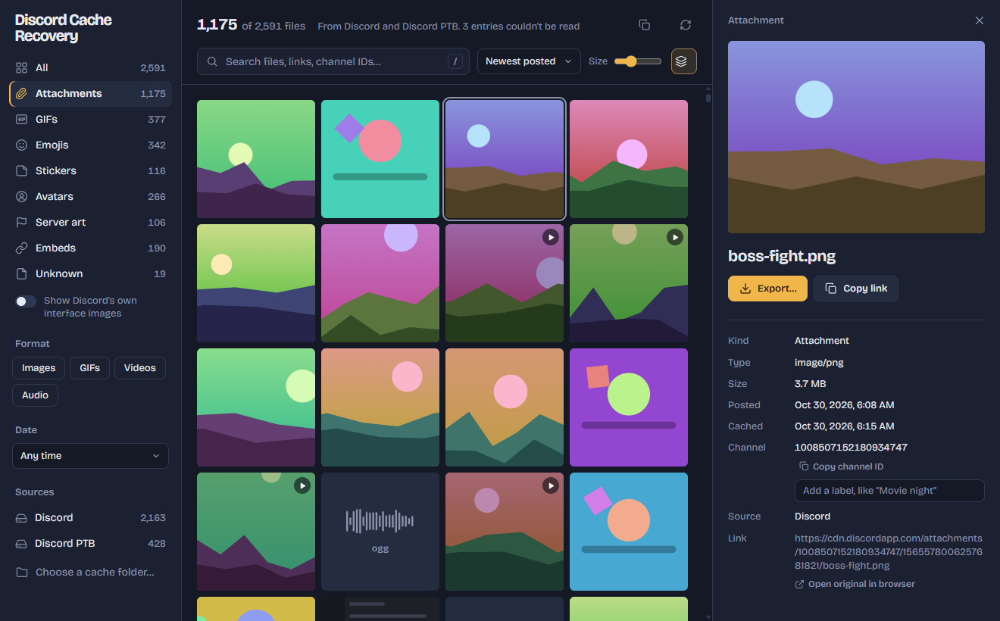

Your lost Discord media is probably still on your computer
Deleted message, dead GIF link, a server you left. Discord kept a copy in its cache. This app finds it and lets you save it.
Free for Windows, macOS and Linux
Frames numbered in the order the scan found them.
Everything Discord cached, laid out to browse
Every file gets its real name, the link it came from and its dates. Pick one to preview it, then export.

What it can get back
Anything your Discord downloaded and hasn't thrown away yet.
- Attachments
- Tenor and Giphy GIFs
- Emojis
- Stickers
- Avatars
- Server icons and banners
- Link-preview embeds
- Videos and audio
- Real names and links
- Attachments come back with their original file name. Every file shows the link it was downloaded from; embeds show their source.
- Two useful dates
- When an attachment was posted, decoded from Discord's IDs, and when your Discord downloaded it.
- Search that fits how you remember
- Search by name, link or channel ID. Filter by kind, format, date and Discord install. Name channels yourself to find them later.
- One copy, the biggest one
- Discord caches the same image at several sizes. Group sizes keeps only the largest.
- Export with names intact
- Save one file or a whole selection to any folder. Files keep their original name and date.
- Every install, every platform
- Discord, PTB, Canary and Development on Windows, macOS and Linux, including Flatpak and Snap. Thousands of files scanned in seconds.
It never goes near your account
The app works entirely offline. It reads files Discord already saved on your computer, the same way a photo viewer opens a folder.
The code is open source, so anyone can check this. Read it on GitHub
-
Never logs inNo password, no account, no token. It doesn't ask for any of them.
-
Never talks to Discord's serversNothing is sent anywhere. Your account can't be flagged by something it never sees.
-
Never modifies DiscordNo injection, no plugins, no changes to Discord's files. It only reads.
How it works
No tricks. Discord's desktop app keeps a local web cache, like a browser does.
Reads the cache
It opens Discord's HTTP cache folder on your computer and looks at each stored file, without reading whole files.
Matches link and date
Each file is paired with the link and date recorded next to it in the cache index.
Sorts by kind
The link tells it what the file was: an attachment, a GIF, an emoji, an avatar. You browse, search and export.
What it can't do. It only finds what is still in the cache. Discord deletes old entries as the cache fills up, and clearing the cache removes everything. It also can't tell which server or favorite-GIF tab something came from, though attachments do include their channel ID.
Download
Latest release . Free and MIT licensed.
Windows says "Windows protected your PC"
The builds aren't code-signed, so SmartScreen doesn't recognize them yet. Click More info, then Run anyway.
macOS says the app is "damaged"
It isn't; macOS says this about unsigned apps. Open Terminal and run this once: xattr -cr "/Applications/Discord Cache Recovery.app"
Questions
Can this get my Discord account banned?
It has no way to. The app never logs in, never uses your account or token and never connects to Discord. It only opens files that are already on your disk, so Discord has nothing to see.
Is it a virus? Windows warned me about it.
The warning appears because the builds aren't code-signed, which costs money every year. The full source code is public on GitHub and the release files are built from it. Click More info, then Run anyway.
Why can't I find my GIF?
Your Discord has to have downloaded it, and it has to still be in the cache. Discord removes old entries as the cache fills up, and clearing the cache deletes everything. Try filtering to GIFs and searching for part of the link, like "tenor".
Can it tell me which server something came from?
No. The cache doesn't record servers or which favorite-GIF tab a file came from. Attachments do include their channel ID, and you can give channels your own names to search by them.
Do I need to close Discord first?
Usually not. On Windows, if the app says the cache is locked, quit Discord fully from the tray icon (right-click, Quit Discord) and scan again.
My Mac says the app is damaged and can't be opened.
That's macOS refusing an unsigned app. Run xattr -cr "/Applications/Discord Cache Recovery.app" in Terminal once, then open it normally.